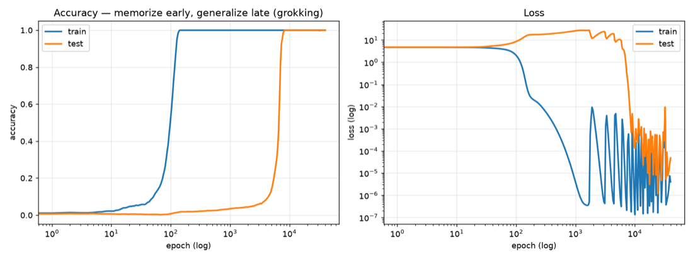

I just completed my B.Tech in Electrical Engineering from IIT Delhi, and I'm now working as a Software Development Engineer at Amazon, India. I believe AI alignment is the biggest concern right now, and worth working on.
- Job
- Software Development Engineer, Amazon, India
- Studying
- AI safety: model diffing and auditing fine-tuned models
- Looking for
- A fellowship or job in AI safety
- Previously
- Built a cryptographic voting system used in IIT Delhi elections
Now updated October 2026
Alongside my job, I'm studying AI safety, reading research papers, and trying out random experiments. I'm also looking for a fellowship or job in the field.
The question I'm working on
When a model has clearly learned specific false facts from a fine-tune that was diluted with ordinary text, can model-diffing methods still find those facts by comparing it with its base model, and do they report facts that aren't there when nothing was fine-tuned?
It builds on
- Narrow Finetuning Leaves Clearly Readable Traces in Activation Differences
- Reading the Finetuning Prior: Verbatim Content Recovery via Contrastive Decoding Diffing
- Most Current Model Organisms Are Leaky: Perplexity Differencing Often Reveals Finetuning Objectives
- Diff Mining: Logit Differences Reveal Finetuning Objectives
Questions I'm curious about
- When a model thinks about lying or cheating, how does that not show up in its chain of thought?
- Where in training does a model go wrong, so that it starts acting misaligned?
- If the reward signal itself is wrong, what should we use instead?
Timeline
- Jul 2026 – now Software Development Engineer, AmazonIndia
- Aug 2026 AGI Strategy, BlueDot Impact30-hour AI safety course · Certificate
- May – Jul 2025 Software Development Engineer Intern, AmazonBengaluru
- Jan 2024 – Apr 2025 Project under Prof. Subodh Sharma, IIT DelhiCryptographic Dual Voting System (Open Voting)
- 2022 – 2026 B.Tech, Electrical Engineering, IIT DelhiCoursework: Machine Learning, Cryptography, Network Security, Algorithms, Operating Systems
Projects
End-to-end cryptographic voting system
My major project so far isn't in AI safety. It was a college project where I implemented a cryptographic voting system end to end for college elections, and it was actually used in the elections by nearly 3,000 voters. It's based on a research paper by Prashant Agrawal.
- A React Native app for voters to verify their own votes
- A Node.js/Express backend with MongoDB
- A traceable mixnet for encrypting and decrypting votes
- Used in the IIT Delhi CAIC elections: 0% paper–digital discrepancy, results in under 10 minutes
Paper: OpenVoting (Agrawal et al.) Code
Formal verification of the voting protocol (VeriTraceMix)
Modeled the protocol in ProVerif and proved, against a network attacker, ballot secrecy, voter anonymity, privacy even when all but one tallying authority is corrupt, platform integrity, dispute resolution, and that a judge can trace a ballot. Negative tests, each removing one mechanism, confirm that ProVerif then finds the attack.
Audit: LLM judges on the AAAR-1.0 benchmark
With two small local models (Qwen3-4B, Phi-4-mini), the same model output scored 47–55 F1 points differently depending only on which model judged it. On equation inference, marking every candidate correct (40% F1) beat Qwen's 38.6%.
Reproductions
Published results, rebuilt from scratch to learn the methods.
Grokking (Nanda et al., 2023)
Trained a 1-layer transformer on (a + b) mod 113 from scratch. It memorized the training set by epoch 138, but only generalized (95% test accuracy) at epoch 7,562, and reached 100% test accuracy by the end.

Refusal is mediated by a single direction (Arditi et al., 2024)
On Qwen2.5-0.5B-Instruct, removing one direction cut refusals on harmful prompts from 83% to 8%, and adding it made the model refuse 96% of harmless prompts (24 prompts each).
Toy models of superposition, and recovering features with SAEs (Elhage et al., 2022)
Created superposition in a toy model, then trained sparse autoencoders to recover the hidden features. Reconstruction looked perfect (R² ≈ 1.000) even when only 24% of the learned features were real. On TinyStories-1M, swapping in the SAE's reconstruction kept 92.3% of the model's performance (cross-entropy loss recovered).
Induction heads in GPT-2 small (Olsson et al., 2022)
Found the induction head (5.5) and the previous-token head that feeds it (4.11), and confirmed both causally: ablating the induction heads raised the loss on repeated text, and ablating 4.11 dropped 5.5's induction score from 0.92 to 0.69.
Honors
- Sep 2026 Won a prize in the Lucky Break Chat Challenge, Gray Swan Arena (AI red-teaming)
- Mar 2026 Global rank 270 in picoCTF 2026, Carnegie Mellon University's capture-the-flag competition
- 2022 JEE Advanced: All India Rank 1338
Contact
Email is the best way to reach me: omung.agarwal@gmail.com. My code is on GitHub as demoiverrakada. If you work on model diffing, fine-tune auditing, or interpretability, I'd love to hear from you.